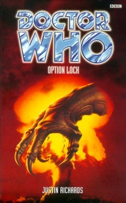

|
Option Lock
|
BASIC PLOT DOCTOR COMPANIONS MATERIALISATION CIRCUIT Pg 265 On Station Nine. PREPARATORY READING CONTINUITY REFERENCES Mention of the Prydonian Seal, which over-decorated the TARDIS console room in the Telemovie. This paragraph is actually a rather lovely description of the TARDIS interior. Pg 7 "as an antiquated vinyl record ground to a halt on its turntable." The Doctor was also listening to a vinyl record in the Telemovie. Has the man not heard of iPods? The "ancient television monitor" is consistent with the Telemovie too. "During this time, Sam had tried to grow her hair (successfully) and quit biting her nails (less so)." Many comments were made about Sam's nail-biting in Kursaal. It would be churlish of me to point out that it's not hard to grow your hair; you just... don't cut it. Stopping biting your nails, however, requires willpower. "The Doctor tossed aside his copy of The Strange Case of Dr Jekyll and Mr Hyde and swung his feet off the footstool." This continues the rather subtle theme of the Doctor's newfound interest in Victorian literature from The Time Machine (The Telemovie), Sherlock Holmes (The Bodysnatchers) and Strand Magazine (Genocide). "Why does this always happen when I'm reading?" The TARDIS has gone wrong again, as it did in The Telemovie. Pg 8 "CRITICAL ARTRON ENERGY DRAIN" is like 'CRITICAL TIMING MALFUNCTION' in the Telemovie, and the information is given to the Doctor in exactly the same way. Artron Energy was first mentioned in The Deadly Assassin. Pg 13 "She [Dorothy Frances Gurney] had the most wonderful begonias, you know." This may be a sly reference to the 'Lovely flowers, begonias' line in Remembrance of the Daleks. Pg 16 "'Pickering?' the Doctor asked, in a voice that suggested he enjoyed a good picker when he got the chance." It's not continuity, but it is, to my mind, an utterly incomprehensible line. What, exactly, does it mean? Pg 17 "'Not unless you've signed the Official Secrets Act.' The Doctor smiled too. 'Several times, though usually against my better judgement.'" The Doctor being a signatory was specifically mentioned in Time-Flight. One is forced to wonder what name he actually used when he signed it. Pg 23 "The first morning of their visit, Sam had set off almost before dawn to jog a couple of miles round the grounds." This is fairly consistent with her claim that she runs 'three miles a day, no excuses' in The Eight Doctors, although she appears to have relaxed the absolute stipulation of the distance a little now. Pg 34 "The moon was practically full, shining down from a cloudless sky and illuminating the courtyard. Sam flinched as unwelcome half-memories crowded in on her." Kursaal. Pg 36 "Sam clapped an arm across her chest. But if she was trying to hide the fact that she was standing in front of him dressed in nothing more than a wet T-shirt, the gesture had the opposite effect." Sam in a wet T-shirt must feature in some fan's dreams. No? Oh well, suit yourselves. Pg 39 "'The Visitation.' The words were underlined at the start of the short sentence. Then the entry itself: 'Tonight the Devil came to us.'" A harsher man than I might suggest, given the capitalisation of the word 'Visitation', that the next bit of the diary reads: 'And his name was Eric Saward.' Pg 45 "In fact, he was forced to admit, the whole enterprise was really rather boring in comparison with his usual investigations." The Doctor's utterly wrong: excepting Alien Bodies, this is the best thing we've had since the BBC run started. Back to basics and just what we needed now. Pg 61 "'The SAC Underground Command Post at Offcutt, the NORAD Combat Operation Centre under Cheyenne Mountain, the National Military Command Centre at the Pentagon, the PAVE PAWS, DEW and BMEWS early-warning installations. That's six. Add in the Nightwatch plane and that makes seven. Looking Glass takes it to eight.' He was looking Kellerman straight in the eye. 'The eight installations from which we would run the offensive and defensive operations of a nuclear war. I think that is more than enough.'" It's not continuity, but readers may be interested to know that this is all absolutely true in the real world. Station Nine, here, remains an unknown. Pg 70 "Sam had found it difficult to refuse the offer, though she had worried she might see posters of herself pinned up outside the local police station. Just what she needed to impress Pickering: 'Have you seen this girl?'" many years later, this became one of the plot points of Aliens of London. Pg 71 Brief reference to Sam's place of growing up: Shoreditch. Pg 74 "He reached for a book, apparently at random, and flicked through it. 'Mind you, this one's a bit boring,' he said a few seconds later." Identical to a moment in City of Death and similar to a moment in Rose. Pg 166 "'What happens,' he asked, 'if we tell the world the truth?' For long seconds no one spoke. The silence was broken by Marion Hewitt. 'That depends on how much of the truth you're advocating, Mr President.'" A glorious depiction of the world of politics in precisely three sentences. Pg 171 "I think I must have seen my six impossible things before breakfast." In The Five Doctors, the Doctor claims to believe 'like Alice, three impossible things before breakfast'. In both cases, it's a quote from Alice in Lewis Carroll's Alice in Wonderland. Inevitably, Richards gets it right - it actually is six things and not three - and Terrance Dicks got it wrong. Pg 173 "'Where be your gibes now?' the Doctor asked the final compartment." We love it when the Doctor quotes Shakespeare. For the record, it's Hamlet Act V, Scene 1. Pg 190 "The Doctor looked back at the soldiers. 'No, they won't shoot us,' he decided. 'We're in Britain.' He nodded to punctuate his argument. 'Right then -' he stretched his arms up behind his head, making it look as though he was obeying the instruction - 'when I say run...'" Coupled with one of the Doctor's greatest (and, sadly, incorrect) assumptions ever is one of the most famous continuity references of all time. Pg 206 "'Dark things are happening, Captain Pickering.' His voice was edged with a hint of anger. 'Evil things. And evil must be fought.'" Another quote straight from that old favourite, The Moonbase. Pg 209 "Then he said, 'Be seeing you,' as if this were a joke, turned and left." It's a reference to either The Prisoner or Babylon 5, depending on which one Pickering's been watching recently. Pg 219 "The Doctor was already on the bike, hand on the throttle." The Doctor steals another motorbike, just as he did in the Telemovie. Pg 221 When suddenly surrounded by the military around the TARDIS: "The Doctor sighed, and pocketed the key. 'Not again.'" I'm not at all clear to what this 'again' refers. Pg 229 "Another image had sprung up over the central part of the map. It was a circular emblem with a stylised eagle in the centre of it. Around the edge was an inscription. It was the seal of the President of the United States of America." It would appear that there's a camera in the White House, but it's just possible that it is, instead, focussed on a copy of Vampire Science. Pg 248 "The Doctor had nodded a sympathetic welcome and muttered something about having been seconded to a UN body a while back for scientific and military work." Spearhead from Space et al. Pg 249 "'You'd prefer Latin?' the Doctor asked with a slight smile." This is a very subtle reference to the frequent mention of that language in Kursaal. Pg 260 "'I suggest you accept that post in Washington,' the Doctor retorted without looking up. 'When it arrives, that is. I know it's an upheaval and the children are at a critical point at school, but they'll do well in the long run.'" The Doctor's new-found ability to look into the future of others' timelines, as seen in the Telemovie. Pg 267 "My whole life has been a rehearsal for this moment, so I'm not going to let you prevent me, I'm afraid." It's possibly a deliberate allusion to the cliffhanger at the end of episode three of The Caves of Androzani, but it might not be. Pg 276 "'Tell me,' he croaked, 'tell me that free will is not an illusion.'" One of Pickering's command codes, just happens to be the most famous quote from Inferno. Pg 280 "How do you explain the years you've gained in a month?" This is subtle foreshadowing of the aging of Sam which will soon occur during Seeing I but which will have no noticeable effect on her personality. "She asked me whether I was still with the Doctor, hoping, I think, for a more interesting answer than the one I was prepared to give." At this point, the EDA writers didn't know how or when Sam would be written out, although Richards clearly ensures that we know whereabouts she's going to end up. She'll eventually be dropped home in Interference book II. OLD FRIENDS AND OLD ENEMIES NEW FRIENDS AND NEW ENEMIES Penelope Silver, despite claiming to be a distant cousin for Norton's, appears to have no part of the Khameirian essence inside of her. She's pregnant. In Krejikistan: Lt. Ivigan, Sergeant Kosimov and General Orominsk. Richards invents a completely new American government for the purposes of this novel, none of whom ever appear again. They include: President Dering; Vice-President Jack Michaels; Special Agent Don Hallett; FBI Director Neil Ansty; Agent Reese; General Howard Kane, Chairman of the Joint Chiefs; Harold Horner, Secretary of Defense; and Marion Hewitt, Secretary of State. Others in America include: Jimmy Reading; Harry Pringle of USAF; Andy Summers; the Bag Men (who carry the nuclear codes in a briefcase, handcuffed to them at all times); Colonel Atkins and Captain Sanders on Looking Glass; and Angela Palmer, the President's make-up artist. The military in England include Major Hayward, a couple of soldiers just obeying orders and a lady of a certain age checking the guest list. Others in England include: Van driver Steve Fisher and UN delegates Geoff Harrisson, Janet Timms and Helene Buchier. On Station Nine: Zina Cherschky, Pierre Latour.
CONTINUITY COCK-UPS PLUGGING THE HOLES [Fan-wank theorizing of how to fix continuity cock-ups] FEATURED ALIEN RACES Yogloth: At war with the Khameirians, they fly slayers and are great ones for absolute economy of effort. FEATURED LOCATIONS Pg 1 The Khameirian meets its unfortunate fate in the vicinity of Rigellis III. Pg 1 Then it crashes to Earth in the grounds of the house at Abbots Soilfor, sometime in the early thirteenth century. Pg 5 Abbots Siolfor, late Autumn 1998AD (it's getting dark by 3.30, and Sam's visit a month later is described as early Winter), starting on a Saturday. All subsequent locations are within the same time zone. Pg 5 The Nevchenka Nuclear Missile Installation in the fictional former Russian satellite state of Krejikistan. Pg 6 Lecture Hall, CIPA. Pg 18 Rogers Street, by the Cambridge Side Galleria, Boston, USA, and environs. Pg 43 The Oval Office, The White House Pg 69 The White Lion pub in Abbots Clinton, which, we are told, serves 'indifferent' lunch. Pg 89 Flying across Europe, en route to Krejikistan. Pg 118 A satellite monitoring station somewhere in the US Pg 129 NORAD (North American Aerospace Defence Command) Pg 132 Nightwatch, the National Emergency Airborne Command Post. Pg 145 The Looking Glass plane. Pg 147 Station Nine. Pg 163 The Chapel, known also as Lord Meacher's Clump. Final resting place for the Khameirian spaceship. Pg 205 Pickering's flat in London. Pg 279 Back at the house in Abbots Siolfor, a month later in Earth time, but years later in Sam's (after she's left the Doctor, it would appear). Described as early Winter (so possibly 1999). IN SUMMARY - Anthony Wilson |
|
 |